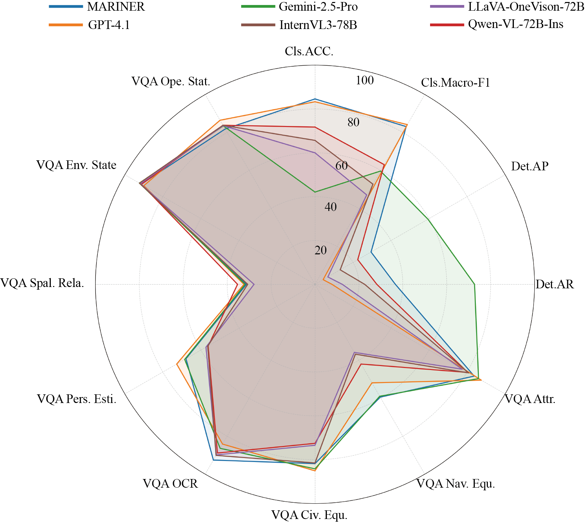
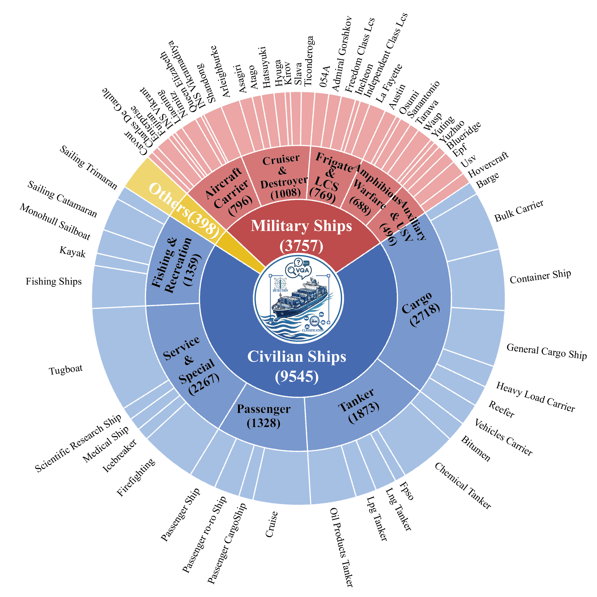
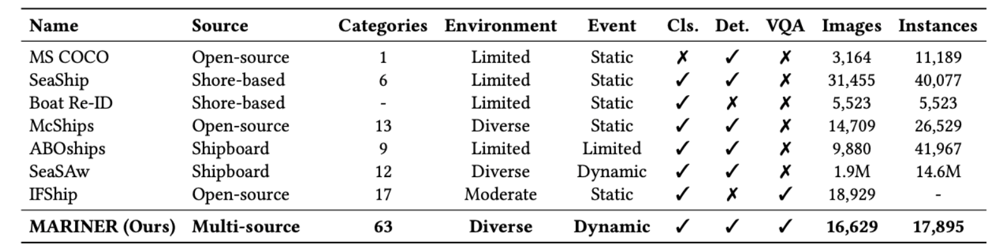
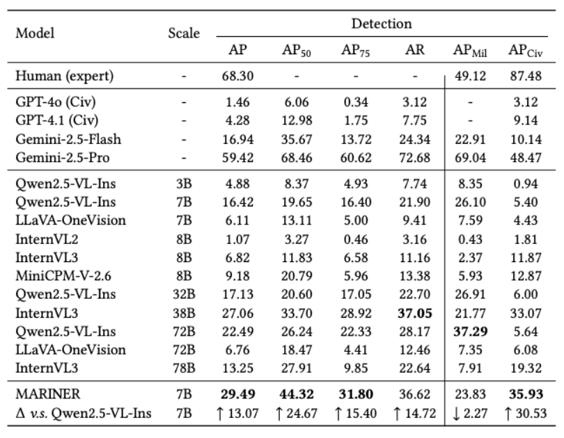
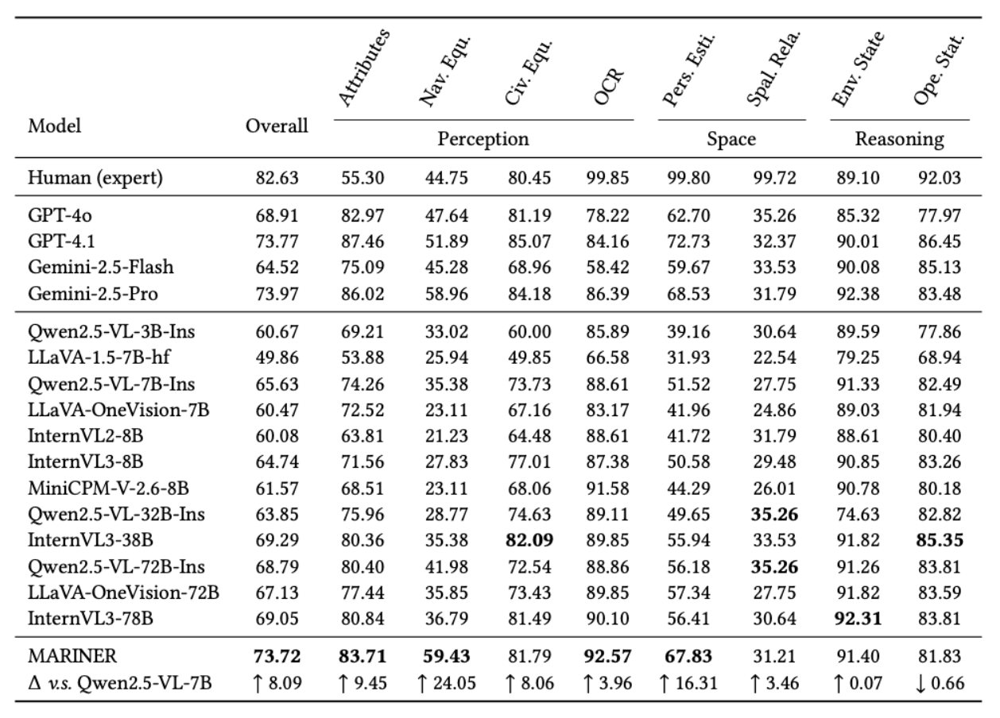
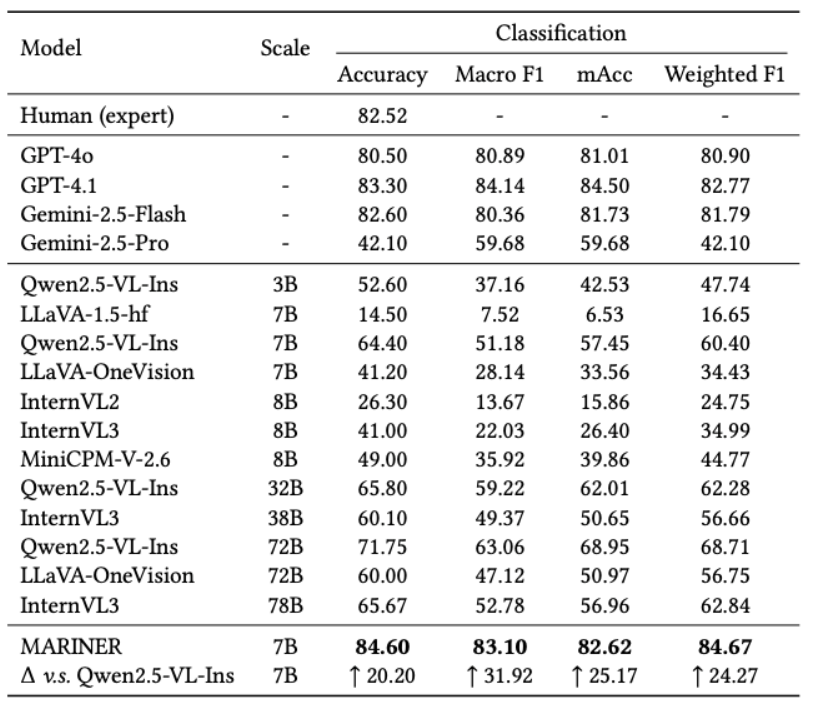

Fine-grained visual understanding and high-level reasoning in real world open-water environments remain under-explored due to the lack of dedicated benchmarks. We introduce MARINER, a comprehensive benchmark built under the novel Entity-Environment-Event (3E) paradigm. MARINER contains 16,629 multi-source maritime images with 63 fine-grained vessel categories, diverse adverse environments, and 5 typical dynamic maritime incidents, covering fine-grained classification, object detection, and visual question answering tasks. We conduct extensive evaluations on mainstream Multimodal Large Language Models (MLLMs) and establish baselines, revealing that even advanced models struggle with fine-grained discrimination and causal reasoning in complex marine scenes. As a dedicated maritime benchmark, MARINER fills the gap of realistic and cognitive-level evaluation for maritime multimodal understanding, and promotes future research on robust vision-language models for open-water applications.
MARINER is built under the novel Entity-Environment-Event (3E) paradigm, comprising 16,629 multi-source maritime images. The dataset covers 63 fine-grained vessel categories (Entity), diverse adverse environments including fog, rain, low-light, and glare conditions (Environment), and 5 typical dynamic maritime incidents such as collisions, capsizing, and fires (Event). The benchmark spans three core tasks: fine-grained classification, object detection, and visual question answering, enabling comprehensive evaluation of multimodal models in open-water scenarios.


Left: Normalized performance comparison of MARINER and other models across the key metrics of the three benchmark tasks. Right: Distribution of the annotated instances within the MARINER, formulated specifically for the fine-grained classification and fine-grained detection tasks.
Comparison of ship-related datasets in terms of source diversity, category scale, environmental coverage, event representation, task coverage, and dataset scale. Cls., Det., and VQA denote classification, detection, and visual question answering, respectively. Multi-source denotes that the dataset is collected from open-source imagery, self-developed electro-optical pod platform and unmanned aerial vehicle.

We conduct extensive evaluations on mainstream Multimodal Large Language Models (MLLMs) across MARINER's three core tasks: fine-grained vessel classification, object detection, and visual question answering. Our results reveal that even advanced models struggle with fine-grained discrimination and causal reasoning in complex marine scenes. Proprietary models generally outperform open-source counterparts, but all models show significant performance drops under adverse environmental conditions such as fog, rain, and low-light scenarios. These findings highlight the unique challenges posed by open-water environments and underscore the need for more robust vision-language models tailored to maritime applications.



@misc{liao2025mariner,
title={MARINER: A3E-Driven Benchmark for Fine-Grained Perception and Complex Reasoning in Open-Water Environments},
author={Xingming Liao and Ning Chen and Muying Shu and YunPeng Yin and Peijian Zeng and Zhuowei Wang and Nankai Lin and Lianglun Cheng},
year={2025},
archivePrefix={arXiv},
primaryClass={cs.CV},
}